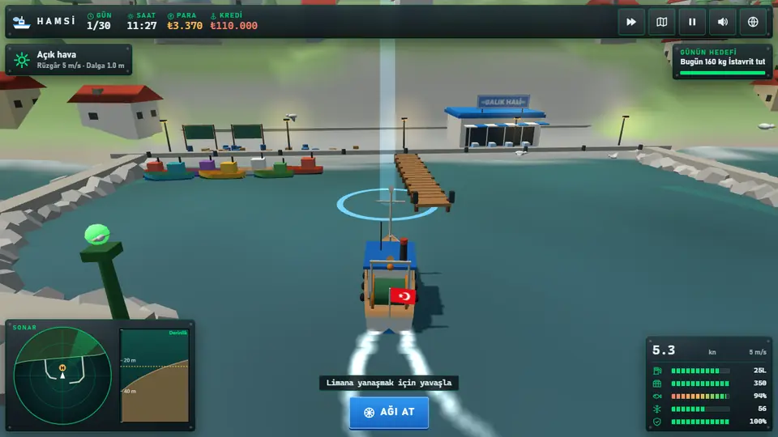

01 BALIKÇILIKFISHING SIM
Hamsi
Sonarda sürüyü bul, ağı daire çizerek at, fırtına gelmeden limana dön.Find the shoal on sonar, circle it with your net and beat the storm home.
Güncellendi · Kasım 2026Updated · Nov 2026 v2.1 Yenilikler penceresi, son 8 sezon kaydı ve iki yeni rozet.What's-new window, last 8 seasons log and two new badges.
Nasıl oynanırHow to play W/S gaz · A/D dümen · Boşluk ağı at / toplaW/S throttle · A/D rudder · Space cast / haul the net
OynaPlay HamsiŞarkısı var: Karadeniz horon-popHas its own song: Black Sea horon pop